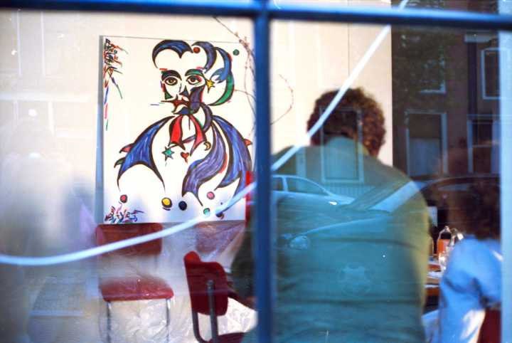
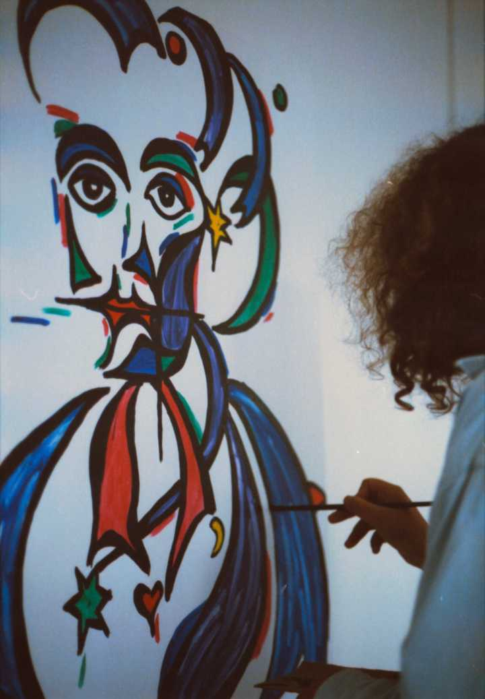
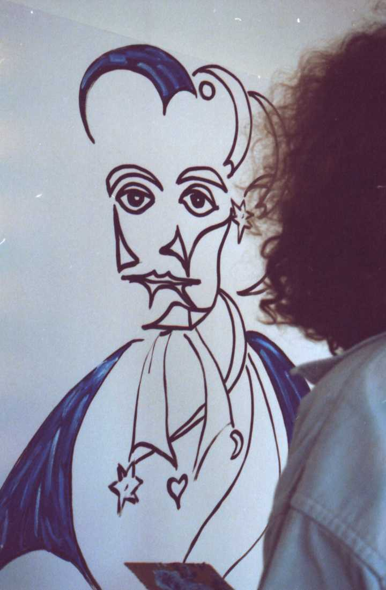
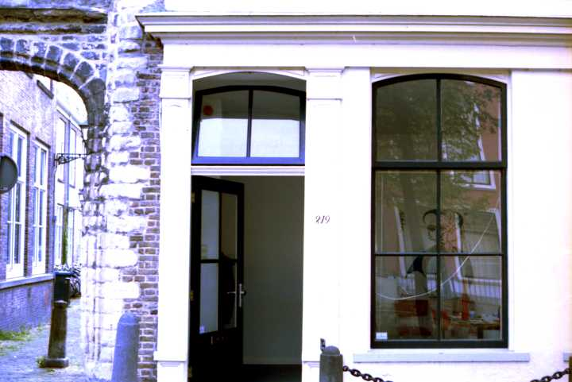
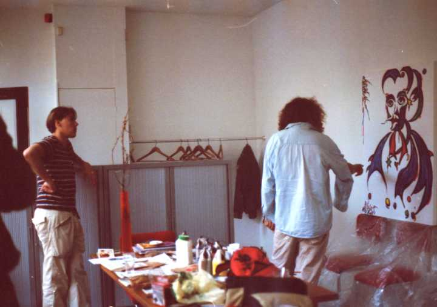
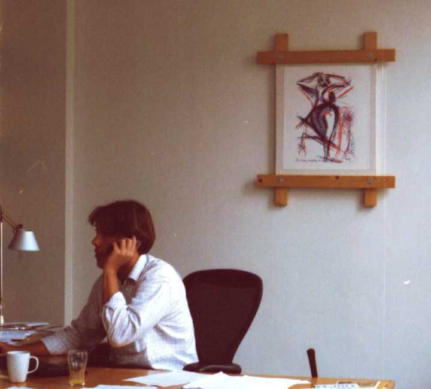
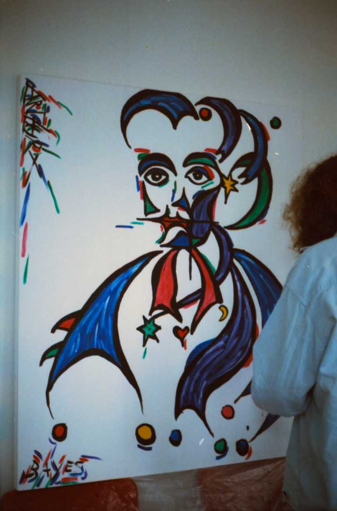
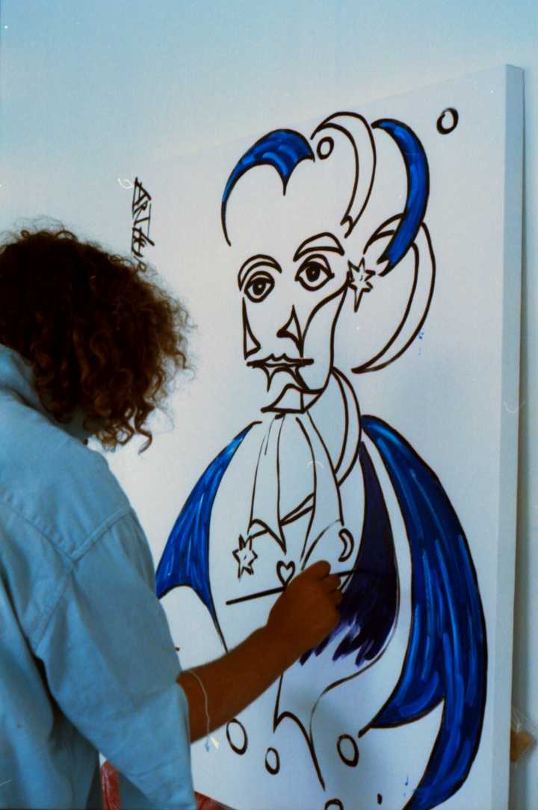
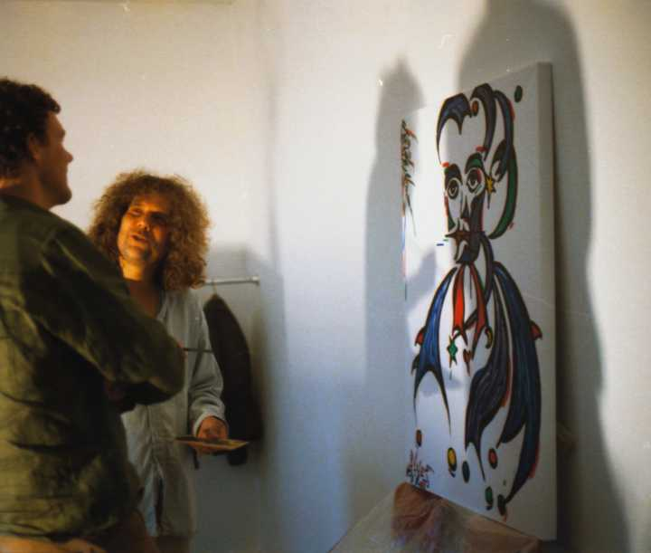

Thomas Bayes
painted by ArthurX
The famous mathematician Thomas Bayes
painted by ArthurX.
Commissioned by ABF Valuation, Delft.
See the painting as it grows.
Delft, August 18th 2006.

Here, you're looking through the glass window of a real old Dutch house.
The mirroring shows the location at a canal (gracht) in the center of Delft.
The wooden frame of the window is colored in a typical Dutch green.
They wanted a portrait of Bayes, because they use his maths alot.
Just like google and all statistics freaks.

He's dead for such a long time now.
They even don't have photographs of the famous geek.
His most important work was published posthumusly in 1763.

I'm better at painting than at stats.
He was also a clergyman.
Someone complained about the green in the painting,
But how can you avoid green in a clergyman?
Bimbo: Yellow,
King: Yellow, (cause he uses the services of the former)
Clergyman: Purple and Green.
(Sadly, sadly: No Bimbo's for Clergymen and Scientists.)
(At least officially, so it's sorry for all of you.)

And in the beginning .....
.....God created Black.

Welcome to Holland!

A close scrutiny of the procedings of the artist.
(Everybody wants explanations.
It's an art in itself.)

Business as usual.
The show must go on.
"Hundred phone calls a day,
keeps the growing pain away",
Geffen, Entertainment entrepreneur.

As a Math master:
He got the stars, moon and a broken heart.

Nothing can start without blue.
...If God created the God Earth and God Sun.
.....He must have glued them in blue of the Holy Sky.
And you know,
Blue is quite sticky,
Especially if it's wet.

Breakie,Breakie
All photo's by Elizabeth.